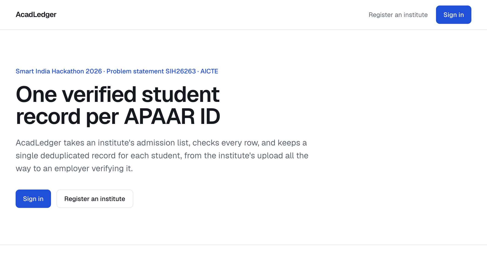
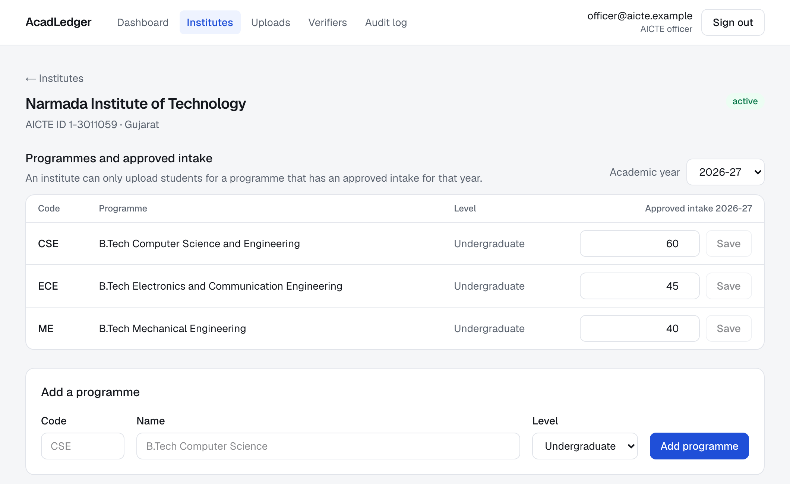
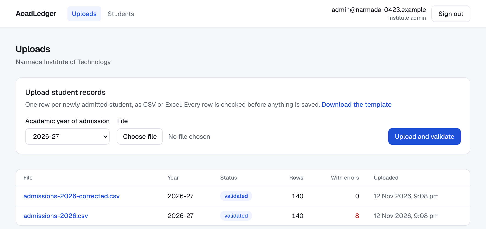
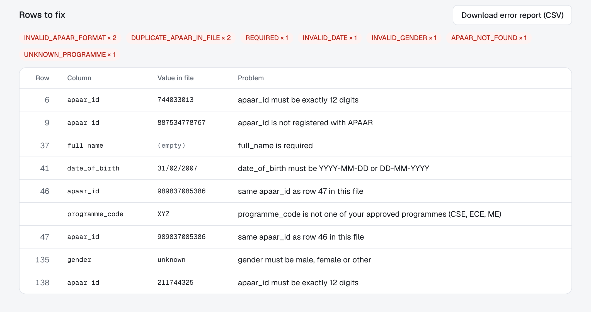
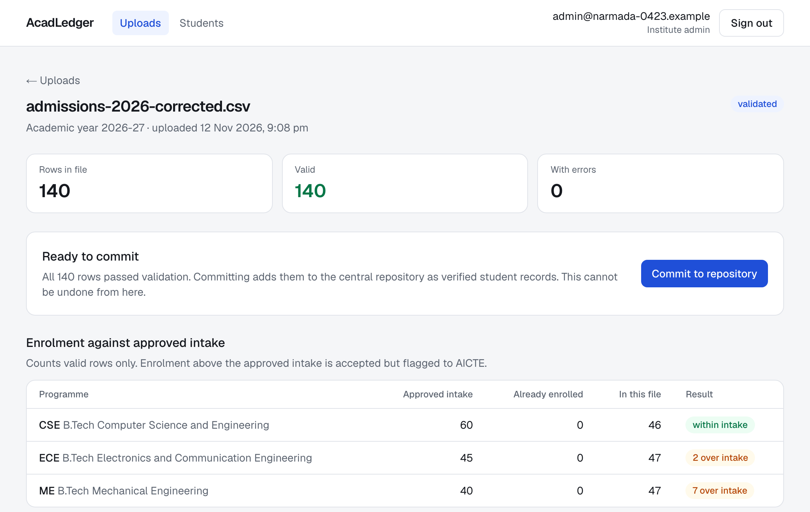
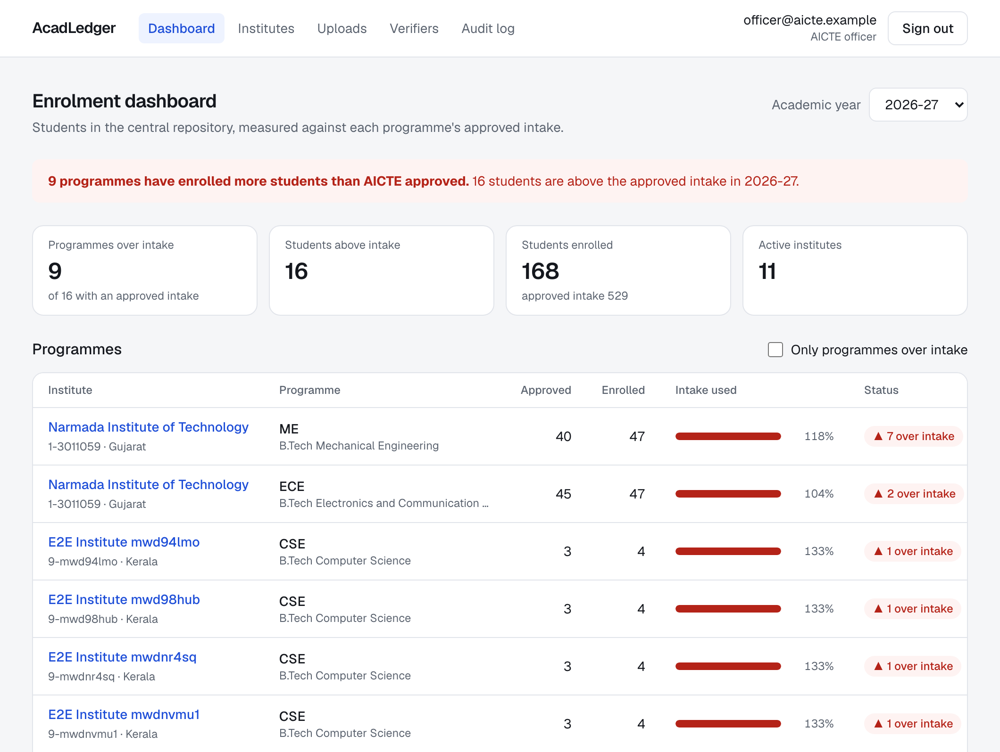
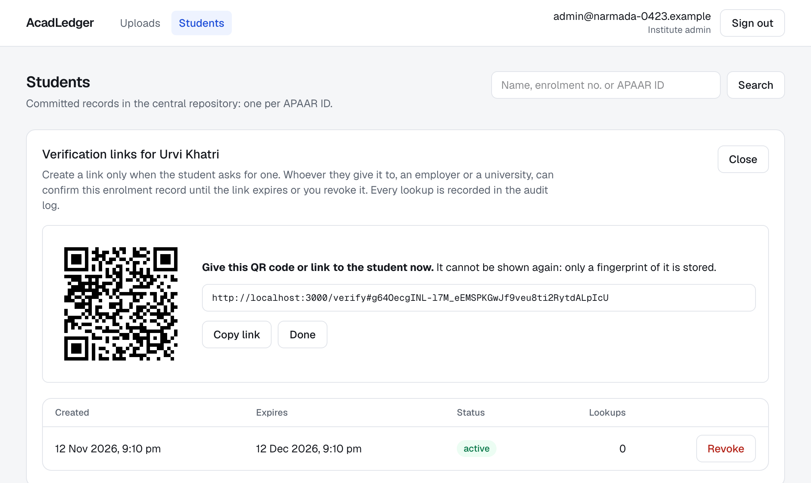
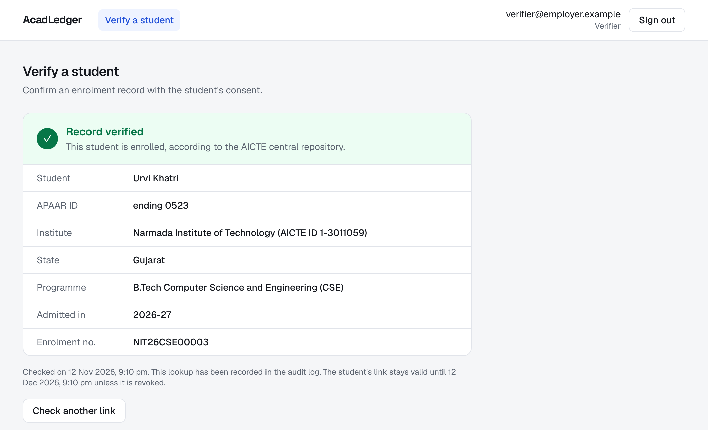

One verified, deduplicated student record per APAAR ID: from an institute's spreadsheet, through validation and a central repository, to an employer confirming the record from a QR code.

Sections 1 to 4 give the whole picture: what problem the system addresses, which parts it is made of, how a single file travels through them, and what is stored. Sections 5 to 13 take one feature each. Every one of those says what the feature does for its user, how it works underneath, and why it was built that way. Sections 14 to 17 cover security, testing, running the system and its limits.
Boxes marked Why it is built this way explain a design decision. They are the parts most worth reading if you are here to learn, because the decision is usually more reusable than the code.
The software is real and tested end to end. Two things around it are simulated: the APAAR registry is a stand-in (real access needs government credentials), and all student data is generated. The screenshots in this guide come from the running system with generated data.
The problem statement asks for an APAAR ID-based student data management and verification platform for AICTE-approved institutions. Behind that title are three concrete gaps.
Student-level data reaches AICTE only from PGDM institutes. Everyone else reports headcounts, so there is no record to check a claim against.
Without a shared identifier, one person can sit on two institutes' rolls and nobody can tell. Individual records cannot be verified either.
Each programme has an intake AICTE approved. Without per-student data, admitting more than that is invisible to the regulator.
APAAR (Automated Permanent Academic Account Registry) gives every student one 12-digit ID that stays the same wherever they study. If every institute reports its students by APAAR ID, all three gaps close with one rule: the central repository holds exactly one record per APAAR ID. A student-level record exists, so it can be verified. A second record for the same ID cannot be created, so nobody is counted twice. And counting records per programme gives real enrolment to compare with the approved intake.
The rest of the system exists to make that rule practical: getting messy spreadsheets in without letting bad rows through, telling institutes exactly what to fix, and letting outsiders check a record without exposing everyone's data.
| Gap | What the system does | Where to read about it |
|---|---|---|
| Totals, not students | Institutes upload one row per student; rows are validated and stored individually | Sections 7 to 9 |
| Double counting | A unique constraint on the APAAR ID, checked at validation and again at commit | Sections 8 and 9 |
| Unverifiable records | Consent-based verification by QR code, with a minimal record returned | Section 12 |
| Unnoticed over-enrolment | A dashboard comparing enrolment with approved intake for every programme | Section 11 |
| Trust in the data itself | An append-only, hash-chained audit log of every significant action | Section 13 |
| Role | What they do | What they can see |
|---|---|---|
| Institute admin data-entry staff |
Uploads admission lists, fixes failed rows, commits valid files, issues verification links for students who ask | Only their own institute's uploads and students |
| AICTE officer Regulation Bureau |
Approves or suspends institutes, records programmes and approved intake, authorises verifiers, watches the dashboard, inspects the audit log | Everything, across all institutes |
| Verifier employer, university |
Confirms one student's enrolment from a link that student shared | One minimal record per link; nothing they can browse or search |
Students are not users of the system. They never sign in. That keeps the account model small, and it is why consent for verification is carried by a link the institute issues at the student's request rather than by a student login. Section 12 explains the trade-off.
Six running parts, each with one job. The browser talks only to the web app; the web app forwards data requests to the API; slow work is handed to a background worker.
| Part | Technology | What it is responsible for |
|---|---|---|
| Web app | Next.js 16, React 19, TypeScript, Tailwind CSS | Every screen. It holds no business rules: it asks the API and shows the answer. It also forwards
/api/* to the API, so the browser only ever talks to one address. |
| API | FastAPI, SQLAlchemy 2, Pydantic | All rules: who may do what, what a valid request looks like, what gets written. If the web app were replaced by a script, the rules would still hold. |
| Worker | Celery | Runs the validation pipeline, the one job too slow for a web request (a large file takes seconds to minutes). |
| Queue | Redis 7 | Holds "validate upload X" messages between the API and the worker. |
| Database | PostgreSQL 17 | Everything durable: accounts, institutes, students, staging rows, the audit log. Several guarantees live here as constraints and triggers, not in application code. |
| Object store | MinIO (S3-compatible) | The uploaded files exactly as received. |
Rules live as close to the data as possible. "One record per APAAR ID" is a database constraint, so it holds even if a bug, a script or two simultaneous requests bypass the check in the code. The API repeats the check only to give a friendly message. The same thinking puts the audit log's append-only rule in database triggers.
One address for the browser. Because the web app proxies the API, the session cookie is same-origin. That avoids cross-origin configuration entirely and lets the cookie use the strictest settings a browser offers.
The quickest way to understand the parts is to follow a single admission list from the moment an institute admin clicks Upload and validate to the moment its students are in the repository.
.csv or
.xlsx, and that it is under 25 MB.uploads/<institute>/<upload>.csv), records an uploads row with
status queued and the file's SHA-256 hash, writes an audit entry, and puts a
message on the queue. It answers immediately with "202 Accepted".upload_rows staging table together with its list of errors. The upload becomes
validated with counts of valid and invalid rows.students, deletes the staging rows, refreshes
the dashboard's summary and writes an audit entry (section 9). The upload is now
committed.Figure 2. The life of an upload. failed is reached from validating and always carries a reason the uploader can act on.
Validation runs in the background because its duration depends on the file. A web request that takes two minutes would time out and leave the user staring at a spinner with no way to come back. With a queue, the upload request returns at once, the page can be closed and reopened, and if a worker dies mid-file the message is redelivered and the upload is validated again from the start.
Staging is separate from the repository. Rows land in upload_rows first and only
move to students on commit. The repository therefore never contains half a file or a
row that failed a check, and an institute can look at exactly what would be saved before saving it.
A problem with the file (a missing column, an unreadable workbook) fails the whole upload with one message. A problem with a row (a bad date, a duplicate ID) never fails the upload: it is recorded against that row so the report can list every problem in one pass.
Nine tables and one summary view. The shape of the data carries most of the system's guarantees, so it is worth knowing before the features.
students is the central
repository. audit_log stands apart on purpose: it refers to the others but nothing
depends on it.| Table | What one row means | Rules the database enforces |
|---|---|---|
institutes | One AICTE-approved institution | Unique AICTE ID; status is one of pending, active, suspended, rejected |
users | One person who can sign in | Unique email; an institute admin must belong to an institute, and nobody else may |
programmes,programme_intakes |
A course an institute offers, and how many students AICTE approved for it in one academic year | Programme code unique within an institute; one intake per programme and year; intake not negative |
uploads,upload_rows |
One submitted file, and one spreadsheet row of it with its validation result | Rows are deleted with their upload; status is one of five known values |
students | One student, admitted to one programme in one academic year | APAAR ID unique across the whole table and exactly 12 digits; enrolment number unique within an institute |
verification_grants | One shareable link for one student | Unique token hash |
audit_log | One thing that happened | Unique hash; triggers reject UPDATE, DELETE and TRUNCATE |
The summary view, programme_enrolment, is derived from these tables: for each programme and
year with an approved intake, it stores the number of students enrolled. Section 11 covers it.
Staging rows are stored as JSON, students as proper columns. A staging row may be nonsense (that is why it is in staging), so it is kept as the text the institute sent, plus a list of errors. A student row has passed every check, so it gets typed columns and constraints. Changes to the schema are written as Alembic migrations, which are applied automatically when the API container starts.
Three roles, one sign-in form, and a rule checked on every request: you get what your role allows, and only for your own institute.
The cookie is marked HttpOnly, so scripts on the page cannot read it, and
SameSite=Lax, so the browser will not attach it to a form submitted from another site.
Programs that are not browsers can send the same token in an Authorization: Bearer header.
| Action | Institute admin | AICTE officer | Verifier |
|---|---|---|---|
| Register an institute | Anyone (public form); the institute starts as pending | ||
| Approve, suspend or reject institutes | – | Yes | – |
| Create programmes, set approved intake | Read own only | Yes | – |
| Upload files and commit them | Yes, if institute is active | – | – |
| See uploads and students | Own institute only | All | – |
| Issue and revoke verification links | Own students only | – | – |
| Verify a student from a link | – | Yes | Yes |
| Dashboard, audit log, manage verifiers | – | Yes | – |
Each API endpoint declares the roles it accepts, and the check runs before any of the endpoint's code. Data is scoped a second time inside the endpoint: an institute admin asking for another institute's upload receives "404 Not Found", the same answer as for an upload that does not exist, so the reply does not even confirm that the other upload is there.
| Protection | How it behaves |
|---|---|
| Lockout | Five wrong passwords in a row lock the account for 15 minutes. A correct sign-in resets the count. The lock is recorded in the audit log. |
| Same answer either way | A wrong password and an unknown email return the identical message, and the API does the same hashing work for both, so neither the text nor the response time reveals which emails have accounts. |
| Change password | Any user can replace their password from the Account page (their email in the header). This matters for verifiers, whose first password is chosen by an officer. |
| Clean session boundaries | Signing in and out are full page loads. The web framework keeps recently visited pages alive in memory for speed; a page load guarantees that nothing from one person's session is still there for the next. |
| Signing secret check | The API refuses to start if the secret used to sign tokens is shorter than 32 characters, so a placeholder value can never reach a running system. |
A signed token instead of a server-side session table. The API can check a token without a database lookup for the session, and there is nothing to clean up. The cost is that a token cannot be cancelled before it expires, which is why the API still loads the user on each request and checks the account is active. For a small deployment that is a reasonable balance.
Nothing can be uploaded until AICTE has said who the institute is and how many students each of its programmes may admit. This is the reference data every later check depends on.
Registration creates the institute and its first admin together, in one transaction, so there is never an institute nobody can sign in to. The AICTE ID and the email must both be unused. Every status change is written to the audit log with the old and new status and the officer who made it.
An officer opens an institute and records its programmes: a short code such as CSE, a
name, and a level (diploma, undergraduate or postgraduate). For each programme and academic year the
officer then enters the approved intake, the number of students AICTE has sanctioned. Academic
years are written like 2026-27 and the format is checked.

These two pieces of reference data are what the last validation stage checks against:
Institutes cannot edit their own programmes or intake. If they could, the intake check would be meaningless: an institute over its limit would simply raise the limit. The numbers belong to the regulator, so only an officer can change them, and the institute sees them read-only. In a real deployment this data would be imported from AICTE's approval system rather than typed in.
A student record carries the academic year of admission, taken from the upload. Enrolment for 2026-27 is counted only against the 2026-27 intake, so each year is judged on its own approval.
Institutes already keep admission lists in spreadsheets, so the system takes spreadsheets: CSV or Excel, one row per newly admitted student, six columns.

| Column | What is accepted | What is stored |
|---|---|---|
apaar_id | 12 digits. Spaces and hyphens are ignored, so
1234 5678 9012 is fine | The 12 digits |
full_name | Up to 200 characters | With extra spaces removed |
date_of_birth | YYYY-MM-DD, DD-MM-YYYY or
DD/MM/YYYY; must give an age of 14 to 100 | A real date |
gender | male, female, other (or m, f, o), any capitalisation | male, female or other |
programme_code | One of the institute's programmes, any capitalisation | Upper case |
enrolment_no | The institute's own number, up to 40 characters, unique within the institute | As given |
Real spreadsheets are messy in predictable ways, and each of these would otherwise produce a confusing failure:
APAAR ID, Student Name, DOB
and Enrollment No are recognised. Extra columns are ignored.123456789012.0; the parser turns it back into digits. Date cells become proper dates.What is not forgiven is the data itself. A date that does not exist or an ID with 11 digits is an error on that row, and the row stops the whole file from being committed.
.csv and .xlsx. A CSV must be UTF-8; if it is not, the message says
how to save it correctly from Excel.A downloadable template and precise messages do more than clever guessing. The parser accepts the common variations, but when something is ambiguous (is 03/04/2007 March or April?) it picks one documented reading, day first, and says so in the error text instead of silently guessing per row.
The core of the system: five stages, run in order over every row. A row that fails one stage still goes through the others, so a single upload reports everything that is wrong with it.
Figure 6. The stages. A later stage only skips a field that an earlier stage has already rejected: there is no point asking the registry about an ID that is not 12 digits.
| Stage | What it checks | Error codes it can raise |
|---|---|---|
| schema | Every column has a value and fits its length; the date is real and gives a plausible age; gender is a known value. Values are normalised here. | REQUIRED TOO_LONG INVALID_DATE DOB_OUT_OF_RANGE INVALID_GENDER |
| apaar_format | The ID is exactly 12 digits | INVALID_APAAR_FORMAT |
| apaar_registry | The registry knows the ID (one call for all IDs in the file; see section 10) | APAAR_NOT_FOUND |
| duplicates | No ID or enrolment number appears twice in the file; no ID is already in the repository, at this institute or any other; no enrolment number is already used at this institute | DUPLICATE_APAAR_IN_FILE DUPLICATE_ENROLMENT_IN_FILE APAAR_ALREADY_ENROLLED APAAR_AT_ANOTHER_INSTITUTE ENROLMENT_NO_EXISTS |
| intake | The programme code belongs to the institute and has an approved intake for the upload's academic year. Also counts valid rows per programme against the intake. | UNKNOWN_PROGRAMME NO_APPROVED_INTAKE |
The naive version of the duplicate check asks the database one question per row: 10,000 rows, 10,000 queries. This pipeline asks one question per check. All the file's APAAR IDs are sent to the database as a single array and the matching students come back in one result:
SELECT apaar_id, institute_id FROM students WHERE apaar_id = ANY(:all_ids_in_the_file)
In-file duplicates are found in memory with a dictionary. Results are written to the staging table with
PostgreSQL's bulk COPY rather than row-by-row inserts. Together these keep the work
proportional to the file size with a small constant: about 7 seconds for 10,000 rows on a laptop
(section 15 has the measurements).
Report everything in one pass. A validator that stops at the first error turns one upload into a dozen: fix the date, upload, discover the bad ID, fix, upload again. Letting every row run through every stage means the first report is the complete to-do list. That is also why stages are separate functions over the whole file rather than one function per row.
Validation is only useful if the person at the institute can act on it. The upload's page is built around one question: which cells do I need to change?

row_number,field,value,code,message,stage 6,apaar_id,744033013,INVALID_APAAR_FORMAT, apaar_id must be exactly 12 digits,apaar_format 41,date_of_birth,31/02/2007,INVALID_DATE, date_of_birth must be YYYY-MM-DD or DD-MM-YYYY,schema
There is no editing in the browser. The admin corrects the spreadsheet and uploads the whole file again as a new upload. The old one stays in the list as a record of what was submitted. Because nothing from a file with errors is ever saved, the second upload does not clash with the first.
The spreadsheet stays the source of truth. If rows could be patched in the browser, the institute's own file would no longer match what AICTE holds, and the next export from their system would reintroduce the same mistakes. Sending people back to the spreadsheet is slightly less convenient and keeps the two in step.
The error report repeats values the uploader typed. A cell starting with =,
+, - or @ would be run as a formula when the report is opened in
a spreadsheet, so such values are written with a leading apostrophe, which makes the spreadsheet
treat them as text.
Committing is the moment staging rows become official student records. It is all or nothing, it happens in one database transaction, and it cannot create a second record for anyone.

INSERT ... SELECT moves every staging row into
students, converting text to typed columns and attaching the programme.Step 2 leaves a tiny window: both institutes could pass the re-check before either has inserted. The
unique constraint on students.apaar_id closes it. The database makes the second insert wait
for the first transaction to finish and then rejects it. The API turns that rejection into a plain
message ("Another upload was committed at the same moment. Try again."), and the retry finds the clash
at step 2 and reports the row. No ordering of events produces two records.
All or nothing, rather than "commit the good rows". Partial commits sound helpful, but they leave the institute with a file that is half in the system: re-uploading the corrected file would then clash with its own earlier rows. With all-or-nothing the rule is easy to state and to trust: a file is either entirely in the repository or not in it at all.
Check twice, constrain once. The validation check gives early feedback, the commit re-check gives an accurate message, and the constraint gives the guarantee. Only the constraint is strictly necessary; the two checks exist so that people almost never see a raw database error.
Deleting staging rows at commit means the repository holds the only copy of each student's details in the database. The upload keeps its counts, so its page still shows what it contained.
Stage 3 asks whether an ID is registered with APAAR. The real registry needs government access this project does not have, so the question is asked through an interface with a stand-in behind it.
Everything in the system that needs the registry depends on one small contract and nothing else:
class ApaarClient(Protocol):
def lookup_many(self, apaar_ids: Sequence[str]) -> dict[str, ApaarLookup]:
"""Look up well-formed (12-digit) APAAR IDs. Returns one result per distinct ID."""
# each ApaarLookup carries the ID and a status: FOUND or NOT_FOUND
The pipeline calls lookup_many once per file with every ID that passed the format check.
A setting, APAAR_CLIENT, selects which implementation is used. Today there is one,
mock. If the registry cannot be reached, the client raises a specific error and the upload
is marked failed with the message "The APAAR service is unavailable. Upload the
file again later." rather than reporting thousands of rows as not found.
A mock that says yes to everything would never exercise the "not found" path, and one that answers at random would make tests flaky. This one uses a fixed rule: an ID counts as registered when its twelfth digit is the Verhoeff check digit of the first eleven. Verhoeff is a checksum scheme that catches every single-digit typo and every swap of two neighbouring digits, which makes it a convenient way to manufacture IDs that are "registered" or "unknown" on purpose.
| ID | The mock says | Why |
|---|---|---|
887534778768 | found | The last digit is the correct check digit for the first eleven |
887534778767 | not found | Same first eleven digits, wrong last digit |
Nothing here claims real APAAR IDs carry a Verhoeff digit. The rule exists only so that generated test data can contain both kinds of ID. It lives inside the mock class and nowhere else, so replacing the mock removes it completely.
lookup_many method that calls the real service, in batches
if the service requires it, and raises the "unavailable" error on timeouts.APAAR_CLIENT setting and to the small function that chooses the
implementation.A real client would probably return more than found or not found, for example the registered name and date of birth. The natural next check, "does the name in the file match the name in the registry?", would be a sixth stage, added the same way as the others.
A script produces spreadsheets of invented students (names from the Faker library's Indian locale) with
IDs the mock accepts. Given --errors 8 it then breaks eight rows, one for each kind of
mistake the pipeline should catch: a short ID, an unregistered ID, a missing name, an impossible date,
an unknown programme, a repeated ID, an invalid gender. The same seed always produces the same file, so
demonstrations and tests are repeatable. No real student data is used anywhere.
Depend on a contract you own, not on a service you do not. The registry is the one part of the system outside the project's control. Wrapping it in an interface keeps that uncertainty in one file, lets every other part be built and tested today, and turns "integrate with APAAR" from a rewrite into one new class.
This is the regulator's view: for every programme, how many students are enrolled against how many were approved, with the programmes over their limit at the top.

Counting students for every programme on each page load would get slower as the repository grows. The dashboard instead reads a materialised view: a query whose result PostgreSQL stores like a table.
CREATE MATERIALIZED VIEW programme_enrolment AS
SELECT pi.programme_id, pi.academic_year, p.institute_id, pi.approved_intake,
count(s.id) AS enrolled
FROM programme_intakes pi
JOIN programmes p ON p.id = pi.programme_id
LEFT JOIN students s ON s.programme_id = pi.programme_id AND s.academic_year = pi.academic_year
GROUP BY pi.programme_id, pi.academic_year, p.institute_id, pi.approved_intake
A stored result is only as fresh as its last refresh. Only two actions can change these numbers,
committing an upload and setting an intake, and each refreshes the view inside its own transaction.
The dashboard is therefore never behind the data. The refresh uses PostgreSQL's
CONCURRENTLY option, so people reading the dashboard are not blocked while it rebuilds.
Flag, do not reject. It would be easy to refuse the 61st student in a programme approved for 60. But the 61st student exists; refusing the row only hides them from AICTE, which is the very problem the platform was asked to solve. So the data is accepted, the institute is warned before it commits, and the regulator sees the excess and decides what to do about it.
An employer or university wants to know one thing: is this person really enrolled where they say? The system answers that for one student at a time, and only when the student has handed over the means to ask.
Figure 10. The verification flow. Possessing the link is what proves the student agreed.

A lookup needs the link, which only the student can hand out, and a verifier account, which only an AICTE officer can create. A leaked link is useless to someone who is not an authorised verifier. A verifier without a link can look up nobody: there is no search box, no list, no way to guess. Institutes cannot use the verification endpoint at all.
The link looks like https://host/verify#dWrb9Ojd.... The part after # is a
random token of 43 characters, generated by the operating system's secure random source. Three details
of how it is handled matter:
# to a server,
so the token does not appear in server access logs or in the address a browser reports to other
sites. The page reads it in the browser and sends it to the API in the body of a request.
| Returned | Deliberately left out |
|---|---|
| Full name; institute name, AICTE ID and state; programme; academic year of admission; enrolment number; the last four digits of the APAAR ID; the institute's current status with AICTE | Date of birth, gender, the full APAAR ID, any other student, any history of who else has looked |
If the institute has been suspended or rejected since the student enrolled, the result says so. A record at a suspended institute is still a real record, but the verifier should know.
An unknown token, an expired link and a revoked link all produce the same reply: "This verification link is invalid, expired or revoked". A verifier, or anyone trying tokens at random, learns nothing about which tokens exist. With 256 bits of randomness, guessing one is not a practical attack in the first place.
A successful lookup writes an audit entry naming the verifier, their organisation and the student, in the same transaction that returns the record. A refused lookup is recorded too, with the reason. The verifier is told on screen that the lookup has been logged. The endpoint is a POST request, not a GET, for the same reason: each call is an event with a side effect, and it should never be repeated by a browser refreshing in the background. The web page makes exactly one call per visit.
Consent as possession of a link. The ideal is a student signing in and approving each request, as DigiLocker does. That needs student accounts and identity proofing, which is a project of its own. A link the student physically hands over captures the essential property, nobody is verified unless they chose to be, at a fraction of the complexity. The honest limitation is that the institute creates the link on the student's word.
An officer creates each verifier account with a name, organisation, email and initial password. The verifier should change that password on first use (section 5). The organisation name is what appears in the audit log next to each lookup.
A regulator's data is only as trustworthy as its history. Every significant action is written to a log that cannot be edited through the application, and in which tampering by any other route can be detected.
An entry's hash is the SHA-256 of a fixed, sorted text form of: the previous entry's hash, the time,
who acted and in what role, the action, what it was done to, the institute concerned, and the details.
Change any of those in an old entry and its hash no longer matches. "Fix" its hash and the next entry's
prev_hash no longer matches. Delete an entry and the chain has a gap. To hide a change,
every later entry would have to be recomputed, and a single remembered hash from outside the database
would expose even that.
The officer's audit page recomputes the whole chain on request and reports either "Chain intact" or the first entry that does not fit, with the reason: it does not link to the previous entry, or its contents do not match its stored hash.
| Layer | What it stops |
|---|---|
| No API for changes | The application has endpoints to read the log and none to edit it. Entries are only ever created as a side effect of the action they describe. |
| Database triggers | UPDATE, DELETE and TRUNCATE on the table raise an error. A bug or a careless script cannot alter history. |
| The hash chain | Someone with enough database access to switch the triggers off can still change rows, but not without the verification reporting it. |
An audit entry is inserted in the same database transaction as the change it describes. If the change fails, there is no entry; if the entry cannot be written, the change does not happen. There is no way to have an action without its record. To keep the chain a single line, writers take a database lock for the instant between reading the last hash and adding their entry.
Actions recorded: auth.login auth.locked auth.password_changed institute.registered institute.status_changed programme.created programme.intake_set upload.created upload.validated upload.failed upload.committed verification.link_created verification.link_revoked verification.lookup verification.lookup_refused verifier.created
One entry per file, not per student. A 10,000-row commit writes one audit entry carrying the count and the file's hash, not 10,000 entries. The file hash ties the entry to the exact bytes uploaded, so the log stays small and still proves what was committed.
The protections described across the guide, gathered by the threat each one answers. The system is sized for a small deployment of tens of users, and the last table says plainly what it does not defend against.
| Threat | Protection | Section |
|---|---|---|
| Stolen password database | Passwords are stored only as Argon2 hashes, which are slow to guess even offline | 5 |
| Password guessing | Five wrong attempts lock the account for 15 minutes; a minimum length of 10 characters | 5 |
| Stolen session by a script on the page | The session cookie is HttpOnly; page
scripts cannot read it | 5 |
| Another website acting as the signed-in user | The cookie is SameSite=Lax, and
every request that changes anything must carry an X-Requested-With header. Another site
can make a browser send a cookie but cannot add a custom header | 5 |
| Forged session tokens | Tokens are signed; the API will not start with a signing secret shorter than 32 characters | 5 |
| One institute reading another's data | Every query for uploads, students and links is filtered by the caller's institute; other institutes' records answer "not found" | 5 |
| An institute raising its own limits | Only officers can create programmes or set intake | 6 |
| Duplicate or fabricated enrolment | Registry check, duplicate checks, and a unique constraint that holds under simultaneous commits | 8, 9 |
| Bulk harvesting of student data by a verifier | No search or listing for verifiers; one token gives one minimal record; tokens are unguessable | 12 |
| A leaked database exposing verification links | Only token hashes are stored | 12 |
| Tokens leaking through logs | The token travels in the URL fragment and a request body, never in a path or query string | 12 |
| Quietly rewriting history | Append-only triggers and the hash chain | 13 |
| Malicious spreadsheet content | Size and row limits; values are never executed; the error report neutralises formula cells; filenames never reach a storage path | 7, 8 |
| SQL injection | All queries pass values as parameters; no query text is built from user input | – |
| The app shown inside another site's frame | Response headers forbid framing, disable content-type guessing and send no referrer | – |
| One user's data lingering for the next on a shared computer | Sign-in and sign-out are full page loads that discard everything held in memory | 5 |
| Gap | What that means, and what a real deployment would do |
|---|---|
| Personal data is not encrypted column by column | Names and dates of birth are plain columns, and the original files are kept. Use encryption at rest in the database and object store. |
| The lockout can be used against a user | Anyone who knows an email can lock that account for 15 minutes by guessing wrong five times. Larger systems limit by network address as well. |
| The registration form is open | It can be spammed with fake institutes. They stay pending, but an officer has to reject them. A real system would add rate limiting or a CAPTCHA. |
| Tokens cannot be cancelled early | Changing a password does not sign out other sessions; they end when the eight-hour token expires. |
| No forgotten-password flow | There is no email sending, so a lost password needs an officer or a database change. |
| Development defaults | The supplied Docker setup uses default database and object-store credentials and no HTTPS. It is for a laptop, not the internet. |
Two layers of automated tests: 67 that exercise the API directly, and an end-to-end run that drives the real interface in a browser. Plus measurements against the targets set at the start.
| Area | Tests | Examples of what is proved |
|---|---|---|
| Uploads and commit | 16 | Every error code lands on the right row; two institutes racing for one student yields one record; excess intake is flagged but accepted; 10,000 rows in time |
| File parsing | 12 | Loose headers, Excel numbers and dates, blank rows, non-UTF-8 and corrupt files each give the intended result |
| Sign-in and roles | 7 | Cookie and bearer token both work; wrong password and unknown email are indistinguishable; deactivated users lose access |
| Verification | 7 | Minimal record; under 500 ms; unknown, expired and revoked links refused identically; only the hash is stored |
| Audit trail | 7 | The database refuses UPDATE, DELETE and TRUNCATE; edits and deletions made behind the triggers are detected at the right entry |
| Hardening | 6 | Lockout; requests without the custom header are refused; password change |
| Onboarding | 5 | Pending institutes cannot upload; institutes cannot change intake |
| Dashboard | 4 | Every over-intake programme is flagged; raising the intake clears it |
| APAAR mock | 3 | The checksum against a published example |
The tests use a real PostgreSQL database, rebuilt from the migrations for each run, because the guarantees under test (constraints, triggers, locks) are the database's own and a substitute would not have them. Only two things are replaced: the object store by an in-memory one, and the queue by calling the pipeline directly.
One Playwright test performs the whole demonstration in a real browser: an institute registers and is seen to be blocked; an officer approves it and sets an intake of 3; a file with errors shows its report; the corrected file of 4 is committed and flagged as 1 over intake; another institute is refused the same student; a verification link is created; the dashboard shows the flag; an officer authorises a verifier; the verifier opens the link signed out, signs in and sees the record; the verifier changes their password; and the audit chain is confirmed intact. If any screen, endpoint or rule in that path breaks, this test fails.
| Target | Measured |
|---|---|
| 10,000 rows validated in under 60 seconds | About 7 seconds, in the test suite on a laptop |
| Load test with 100,000 rows | About 100 seconds through the real queue, on the same laptop while other work was running |
| Every cross-institute duplicate rejected or flagged | Proved by tests at validation, at commit, and under a simulated race |
| Every programme over its intake flagged | Proved by test; the view is refreshed with each change |
| Verification answers in under 500 ms, every lookup logged | Asserted in a test, including the audit entry |
The first 100,000-row run took 131 seconds. Rather than guess, each stage was timed. Three places stood out, and each got a targeted change: writing results (45 s to 19 s, by switching from INSERT to PostgreSQL's COPY), the duplicate queries (16 s to 6 s, by sending IDs as one array instead of thousands of separate parameters), and date parsing (10 s to 5 s, by replacing a general-purpose date parser with two patterns). The lesson is the method: measure first, then change only what the measurement points at.
Everything runs on one machine with Docker for the services and Node for the web app.
cp .env.example .env # then set JWT_SECRET, e.g. with: openssl rand -hex 32 docker compose up -d # PostgreSQL, Redis, MinIO, the API on :8000, the worker docker compose exec api python -m app.seed cd web && pnpm install && pnpm dev # the web app on http://localhost:3000
The seed creates one account of each kind, all with the password set as SEED_PASSWORD in
.env:
| Account | What it is |
|---|---|
officer@aicte.example | AICTE officer |
admin@sahyadri.example | Admin of Sahyadri Institute of Technology (CSE 120, ECE 60, ME 60) |
admin@kaveri.example | Admin of Kaveri College of Engineering (CSE 60, MBA 60) |
verifier@employer.example | Verifier |
./scripts/reset-demo.sh. It asks first, then wipes local data, seeds the accounts
and writes two files to api/data/.demo-with-errors.csv and read the report (section 8).demo-clean.csv, note the intake warning, and commit (section 9).| Path | What is there |
|---|---|
api/app/routers/ | One file per group of endpoints: auth, institutes, uploads, students, verification, dashboard, audit |
api/app/pipeline/ | parser.py (file to rows), stages.py
(the five stages), runner.py (runs them for one upload), commit.py |
api/app/audit.py, apaar.py, enrolment.py |
The hash chain; the registry interface and mock; the dashboard view's refresh |
api/app/models.py, api/migrations/ | The tables as Python classes, and the migrations that create them |
api/tests/ | The 67 API tests, one file per area |
web/src/app/ | The pages: home, login, register, and the signed-in area in
(app)/ with one folder per page |
web/src/lib/ | The API client and types, the per-role navigation, the session |
web/e2e/ | The Playwright end-to-end test |
docker-compose.yml, .env.example | The services and their settings |
http://localhost:3000 is the application. http://localhost:8000/docs is an
interactive list of every API endpoint, generated from the code, where requests can be tried by hand.
http://localhost:9001 is the object store's console, where the uploaded files can be seen.
docker compose run --rm --no-deps api pytest runs the API tests in a separate test
database. pnpm exec playwright test inside web/ runs the end-to-end test
against the running system, using the Chrome installed on the machine.
| Term | Meaning here |
|---|---|
| APAAR ID | A 12-digit identifier that stays with a student across institutions (Automated Permanent Academic Account Registry) |
| AICTE | The All India Council for Technical Education, the regulator that approves institutes and their intake |
| Approved intake | The number of students AICTE has sanctioned for one programme in one academic year |
| Academic year | Written 2026-27; taken to start in July |
| Central repository | The students table: one record per APAAR ID |
| Staging | Where uploaded rows wait, with their errors, until committed |
| Commit | Moving a fully valid upload from staging into the repository |
| Queue and worker | A list of jobs to do later, and the program that does them |
| Transaction | A group of database changes that either all happen or none do |
| Unique constraint | A database rule that no two rows may share a value |
| Materialised view | A query whose result is stored and refreshed on demand |
| Hash | A short fingerprint of some data; any change to the data changes it (SHA-256 here) |
| Hash chain | A list in which each item includes the hash of the one before |
| Adapter | A thin layer that hides an outside service behind an interface the project controls |
| Token | A hard-to-guess string that proves something: here, a session or a student's consent |
| CSRF | Cross-site request forgery: another site causing your browser to act on this one while you are signed in |